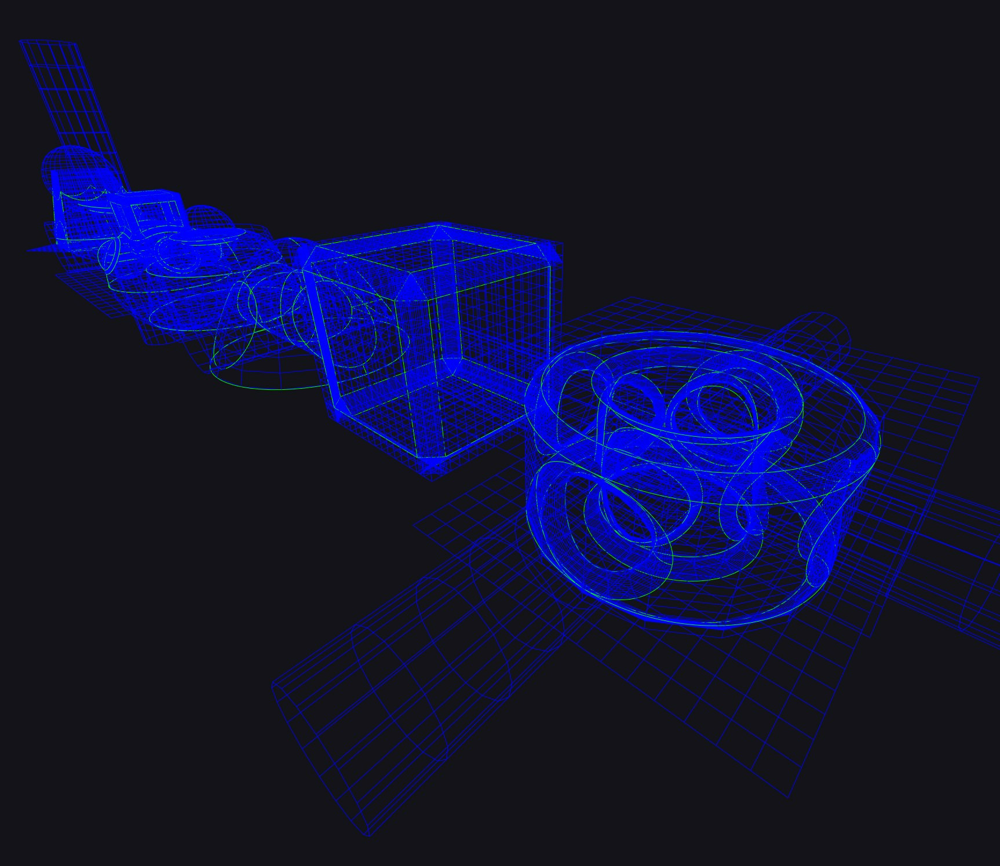
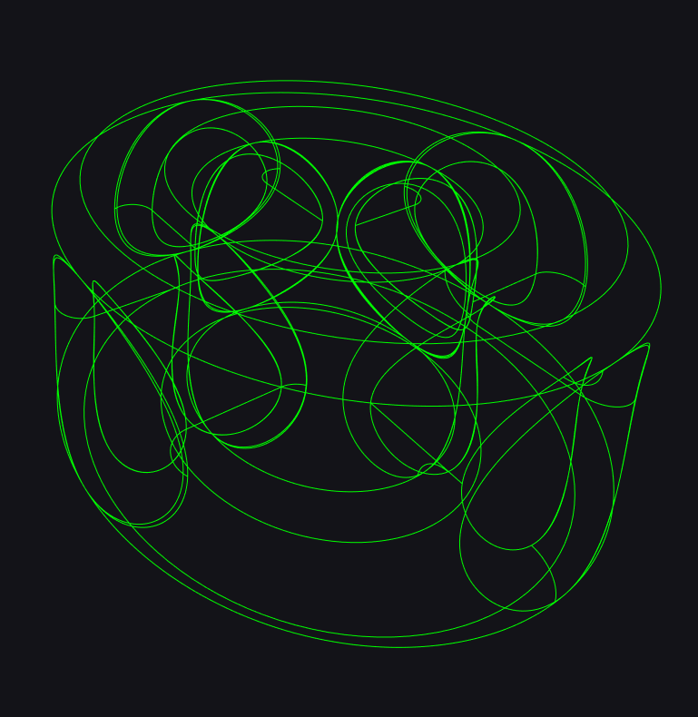

Trimmed NURBS
I’m currently swimming in an ocean of NURBS with their trimming loops. This is experimental work for NURBS rendering in Maverick Render.


Lattice-Boltzmann Method (LBM)
A couple of weekends ago I was tinkering with fluid dynamics and implemented a few compute shaders in Unity. Among the ones I implemented, my favorite is the Lattice-Boltzmann Method featured here.
This early implementation allows to draw SDF entities in the simulation space behaving as blockers, inflows or outflows. I intend to expand on the features, but most likely at a slow pace, because this is a no-rush side-project. But I definitely wish to post now and then about my progress.
I also hope to find some spare time soon to write a quick article on how to implement an LBM cellular automata from a light-on-maths perspective.
Colorful pet project
Some pet project I am making some progress on. More info soon. Definitely. Maybe.
[EDIT] I had to install a micro.blog plug-in so Twitter cards display the main post image when cross-posting to Twitter. Apologies for the multiple test posts.
[EDIT] Here’s a hint. It’s a cutsie CSG-based Solid modeling experiment in Unity Editor.

Topology fun
Recently I have been revisiting in my spare time one of my favorite subjects: topology. I will probably be posting some stuff about topological operators, subdivision surfaces, DCEL structures, irregular tilings and such things in the near future.
Below: A little demo I’ve written that supports an extended flavor of Conway’s notation for polyhedra: adotaocD.

[EDIT] I paused this pet project for the time being… because the 2022.2 release of Maverick has virtually blown all my productivity hours away. But I plan to write some entries on topological operators at some point further into this year.
Old MLT experiments
These are some very old MLT tests that I found on my hard drive today.
Metropolis Light Transport (MLT) is a global illumination variant of the Metropolis-Hastings algorithm for Markov-Chain Monte Carlo (MCMC).
In a nutshell, MCMC algorithms explore the neighborhood of a Monte Carlo sample by jittering (mutating) said sample. A metric is then used to define how good a sample is, so the next mutation is accepted or rejected based on how good it is compared to the current sample. This leads to a random-walk in the space of samples which tends to crawl up in the increasing direction of the metric used.
This method biases sampling towards successful samples. So a bit of statistics juggling is required to counter that bias. The link below is a seminal paper that beautifully describes the nuts and bolts of this process. The idea presented there is to jitter samples, not in sample space directly, but in quasi-random number tuples space instead:
Simple and Robust Mutation Strategy for Metropolis Light Transport Algorithm
In the particular case of MLT, samples are random light paths, and the metric used is the amount of light energy transported by a path. This can be implemented on top of regular Path Tracing. Arion was the first (?) commercial render engine that did this on the GPU back in 2012 or so.
MLT has fallen out of favor over the years (path guiding is all the rage these days). But MLT proved to be a competent universal solution to global illumination, being capable of boosting path tracing so it could efficiently solve even the hardest cases, such as refractive caustics.
The beauty of MLT is that it requires 0 configuration from the user and does not need any additional memory for data structures. The main drawbacks are the ugly splotchy and non-uniform look of noise, as compared to regular path tracing, and the inability to guarantee noise stability across animation frames.
Experiments in 2D
Before I implemented MLT in Arion, I did some MCMC simulations with 2D sampling. In the videos below I used the (x,y) coords of pixels as samples, and the grayscale luminance Y of the image as the metric. The goal of the mutations here is to reconstruct the image by sampling harder in the directions of higher luminance.
MCMC is prone to getting stuck for long amounts of time in local maxima. The practical solution proposed in the above paper is to introduce a plarge probability that kicks the sampling scheme and sends the next sample to a purely random position in the sample space. The videos below visualize this very well I think.
Mutating in QRN tuple space without plarge - Watch on Youtube
Mutating in QRN tuple space with plarge - Watch on Youtube
MLT reconstructing a grayscale image - Watch on Youtube
Implementing MLT successfully in our render engine did require some specialization in our sampling routines. I won’t get into the details, but basically, since mutations happen in the random tuples that generate the paths, you expect continuous mutations in the tuples to produce continuous changes in the generated paths. So all samplers involved must avoid discontinuities in the [QRN<->path] bijection.
Back in time
Some MLT-heavy images rendered in Arion back then:
Uniform vs. stratified (2015-03-10)
[EDIT] This post was migrated from my blog from 2011…
This is a classic subject in numerical (Monte Carlo) integration.
Uniform 2D distribution vs. Halton series for the first 2 dimensions

To the left: 32768 points in a 512×512 image using a uniform random number generator (Mersenne Twister). To the right, the first 32768 pairs in the Halton series, using dimensions #0 and #1. Click to enlarge!
Filling of missing image pixels (2015-05-28)
[EDIT] This post was migrated from my blog from 2011…
Here’s what we could call a mean pyramid of the 512×512 Lena image. i.e., a sequence of progressive 1:2 downscalings, where each pixel in the i-th downscaled level is the average of the corresponding 4 pixels in the previous level. For people familiar with OpenGL and such, this is what happens when the mipmaps for a texture map are computed:
The 9+1 mipmap levels in the 512×512 Lena image

There are many smart, efficient, and relatively simple algorithms based on multi-resolution image pyramids. Modern GPUs can deal with upscaling and downscaling of RGB/A images at the speed of light, so usually such algorithms can be implemented at interactive or even real-time framerates.
Here is the result of upscaling all the mip levels of the Lena image by doing progressive 2:1 bi-linear upscalings until the original resolution is reached:
Upscaled mipmap levels

Note the characteristic “blocky” (bi-linear) appearance, specially evident in the images of the second row.
Lately, I have been doing some experimentation with pixel extrapolation algorithms that “restore” the missing pixels in an incomplete image for a 2D DOF filter based on the Depth AOV.
My pixel extrapolation algorithm works in 2 stages:
- The first stage (analysis) prepares the mean pyramid of the source image by doing progressive 1:2 downscalings. Only the meaningful (not-a-hole) pixels in each 2x2 packet are averaged down. If a 2x2 packet does not have any meaningful pixels, a hole is passed to the next (lower) level.
- The second stage (synthesis) starts at the smallest level and goes up, leaving meaningful pixels intact, while replacing holes by upscaled data from the previous (lower) level.
Mean pyramid (with holes)

Note that the analysis stage can stop as soon as a mip level doesn’t have any holes.
Here is the full algorithm, successfully filling the missing pixels in the image.
Mean pyramid (filled)

Conclusions:
This algorithm can be implemented in an extremely efficient fashion on the GPU, and allows for fantastic parallelization on the CPU as well. The locality of color/intensity is preserved reasonably well, although holes become smears of color “too easily”.
A small (classic) inconvenience is that the source image must be pre-padded to a power-of-2 size for the progressive 1:2 downscalings to be well defined. I picked an image that is a power-of-2 in size already in the above examples.
TL;DR: Given the ease of implementation and the extreme potential in terms of efficiency, the results are quite decent for many applications.
Playing with the Fourier Transform (2016-07-28)
[EDIT] This post was migrated from my blog from 2011…
The beauty and power of the Fourier Transform never cease to amaze me. And since several effects in ArionFX are based on it, I have had to play with it a lot in recent times.
As explained in a previous post, diffraction patterns (e.g., the glare simulated in ArionFX for Photoshop) come from the Fourier Transform of the lens aperture. I will use the FT of an aperture mask for visualization in this post.
I will use pow-2 square sizes (my FT implementation is an FFT). Let’s start by this Aperture x Obstacle map output directly from ArionFX for Photoshop v3.5.0.
Aperture x Obstacle mask, rasterized @ 512×512

The Fourier Transform of that image, rasterized at that size in said 512×512 buffer, is the following.
FT of the mask above

The faux-color is done on the magnitude of each complex number in the FT. All the FT images in this post are normalized equally, and offset to look “centered” around the mid-pixel.
Such diffraction patterns and some heavy convolution magic are what ArionFX uses to compute glare on HDR images:
Resulting glare in ArionFX

–
Now, let’s focus on what happens to the FT (frequency space) when one does certain operations on the source data (image space). Or, in this exemplification: what happens to the diffraction pattern, when one plays with the rasterized aperture mask.
Note that we’re speaking of the Discrete Fourier Transform, so sampling (rasterization, pixelization) issues are mostly ignored.
Rotation about the center
A rotation of the source buffer about its center doesn’t change the frequencies present in the data; only their orientation. So a rotation in the source data rotates the FT rotates in the exact same way.
As we will see next, this property holds true regardless of the center of rotation, because the FT is invariant with respect to translations.
Rotation about the center

Translation (with warp-around)
Frequencies arise from the relative position of values in the data field, and not from their absolute position in said field. For this reason, shifting (warp-around included) the source data does not affect the corresponding Fourier Transform in any way.
Invariance to translation

Let’s recall that the idea behind the FT is that “any periodic function can be rewritten as a weighted sum of sines and cosines of different frequencies”. Periodic being the keyword there.
Repetition (tiling)
Tiling the data buffer NxM times (e.g., 2×2 in the example below) produces the same FT, but with frequencies “exploded” every NxM cells, canceling out everywhere else.
This is because no new frequencies are introduced, since we are transforming the same source data. However, the source data is NxM times smaller proportional to the data buffer size (i.e., the frequencies become NxM times higher).
Exploded frequencies on tiling

Data scaling
Normalization and sampling issues aside, scaling the data within the source buffer scales the FT inversely.
This is because encoding smaller data requires higher frequencies, while encoding a larger version of the same data requires lower frequencies.
Inverse effect on scaling

In the particular case of glare (e.g., ArionFX) this means that the diffraction pattern becomes blurry if the iris is sampled small. Or, in other words, for a given iris, the sharpest diffraction pattern possible is achieved when the iris is sampled as large as the data buffer itself.
Note, however, that “large” here means “with respect to the data buffer”, being the size of the data buffer irrelevant as we will see next.
Hosek & Wilkie sky model (2015-03-03)
[EDIT] This post was migrated from my blog from 2011…
This is an old comparison between the Preetham and Hosek & Wilkie sky/sun models.
Preetham et al. sky model

Hosek & Wilkie sky model

Scrambled Halton (2015-03-10)
[EDIT] This post was migrated from my blog from 2011…
The Halton sequence, which is one of my favourite algorithms ever, can be used for efficient stratified multi-dimensional sampling. Some references:
It is possible to do stratified sampling of hyper-points in the s-dimensional unit hyper-cube by picking one consecutive dimension of the Halton series for each component. A convenient way to do so is to use the first s prime numbers as the basis for each Halton sequence.
It is well-known, however, that while this approach works great for low dimensions, high dimensions often exhibit a great degree of undesired correlation. The following image displays a grid where each cell combines two components of the 32-dimensional Halton hyper-cube.
Raw 32-dimensional Halton hyper-cube

One can easily spot how some pairs exhibit an obvious pattern, while others fill their corresponding 2D area very densely. This happens more aggressively for higher dimensions (i.e., to the right/bottom in the image) and for pairs formed with close components (i.e., near the diagonal in the image). Click to enlarge!
A successful approach to dissolve this problem without losing the good properties of stratification is to do “random digit scrambling” (a.k.a., rds). During the construction of a Halton number, digits in the range [0..base[ are combined. Given a Pseudo-Random Permutation of length=base, all that one must do is use PRP(digit) instead of digit directly. This somewhat shuffles Halton pairs in rows and columns in a strong way so the correlation disappears. However, since the PRP is a bijection, the good properties of stratification are generally preserved.
How to build a strong and efficient randomised PRP of an arbitrary length is an interesting subject which details I won’t get into here.
Here’s the scrambling strategy in action:
Scrambled 32-dimensional Halton hyper-cube

Now all the blocks in the grid look equally dense. Magic!
As long as one picks good PRPs, it is possible to generate any number of different samplings, all with the same good properties.
Sobel operator (2014-09-07)
[EDIT] This post was migrated from my blog from 2011…
The Sobel operator is a simple way to approximate the gradient of the intensity in an image. This, in visual terms, can be used for edge detection. The purpose of edge detection is to significantly reduce the amount of data in the image, while preserving the structural properties to be used for further image processing.
In practice, the Sobel operator is simply a pair of 3×3 (separable) convolution kernels. One highlights the horizontal gradient/edges, and the other one highlights the vertical gradient/edges.


In non-formal terms, and under certain theoretical assumptions, this is conceptually equivalent to computing the partial derivatives of the image with respect to x an y.
For the examples below, I am using as input the same image featured by Wikipedia in the Sobel operator page:
Sobel operator

This grid presents:
- The input image (luminance).
- The absolute magnitude of the result of the Sobel filter.
- The result of the Sobel (x) filter.
- The result of the Sobel (y) filter.
- Same as (2), but in faux color.
- The gradient vectors, normalized and displayed as an RGB-encoded normal map.
The 3-tap Sobel convolution kernels have a 1px radius, so they have a very limited edge detection range. This makes the filter quite shaky as soon as the image presents fine details or noise. For this reason, one may want to pre-pass the input image with a subtle Gaussian blur.
This has the effect of diminishing edges in general (as expected), but the resulting gradient images are equivalent, yet much cleaner.
Sobel operator (Gaussian with sigma=2)

The Sobel operator is one of the most fundamental building blocks in feature detection in the field of Computer Vision.
Note that the Sobel operator does not characterize edges or detects features in any way. It simply produces a filtered image where pixels that most likely belong to an area of high gradient (such as an edge) are highlighted.
Bonus remark: Sobel filtering is very similar to what a render engine such as Maverick does to transform a height map (bump map) into a normal map.
The Error function (erf) (2014-09-06)
[EDIT] This post was migrated from my blog from 2011…
Here is the 1D Gaussian function:
Put in short, the Error function is the integral of the Gaussian function from 0 to a certain point x:
At least, that is the way the formula is presented by Wikipedia and Wolfram|Alpha. But as soon as you try to work with it you find out that in order to really match the above Gaussian function, normalization and axis scaling must be taken care of:
The plots below display G(x,sigma) (bell-shaped) in blue, and erf(x,sigma) (S-shaped) in yellow.
A very typical use for G(x,sigma) that I’ve been talking about on this blog lately, is to build convolution kernels for Gaussian blur. An image convolution kernel, for example, is a pixel-centered discretization of a certain underlying function (a Gaussian, in this case). Said discretization splits the x axis in uniform unit-length bins (a.k.a., taps, or intervals) centered at x=0.
For each bin, this is pretty much the definition of the integral of G(x,sigma) along the bin. That is, the increment of erf(x,sigma) between both end-points of the bin.
Discretized 1D Gaussian (sigma=0.5)
Discretized 1D Gaussian (sigma=1.0)
Discretized 1D Gaussian (sigma=1.5)
Doing it wrong:
Most implementations of Gaussian convolution kernels simply evaluate G(x,sigma) at the mid-point of each bin. This is a decent approximation that is also trivial to implement:
This value is represented in blue in the above plots.
Implementing erf:
While G(x,sigma) has a trivial explicit formulation, erf is an archetypical non-elementary function.
Some development environments provide an erf implementation. But most (the ones I use) don’t. There are some smart example implementations out there if you Google a bit. Usually they are either numerical approximations, or piece-wise interpolations.
Assuming that one has an erf implementation at his disposal, the correct value for the bin [a..b] is:
This value is represented in red in the above plots.
A poor-man’s approximation:
If you are feeling lazy, an alternative approximation is to super-sample G(x,sigma) along the bin. The amount of samples can be chosen to be proportional to how small sigma is.
This method is easy to implement. However, it is far less elegant and also less efficient as more evaluation calls are required.
Conclusion:
When discretizing a Gaussian function, as sigma becomes small (close to or smaller than (b-a)), the approximation bin(a,b) (in blue above) deviates significantly from the correct bin'(a,b) (in red above).
So if you are going to Gaussian-blur at radius 1px or smaller, and precision is important, then it is necessary to use erf(x,sigma) or at least super-sample G(x,sigma).
Downsampling and Gaussian blur (2014-09-01)
[EDIT] This post was migrated from my blog from 2011…
I talked about several strategies to optimize convolutions in some of my previous posts. I still got to talk about how to approximate a Gaussian blur using a multi-step Box blur in a future post. However, there is yet another good technique to optimize a Gaussian blur that may come handy in some cases.
This post is inspired by a need that I had some days ago: Say that you need to do a 3D Gaussian blur on a potentially humongous 3D data buffer. Working with downsampled data sounds ideal in terms of storage and performance. So that’s what I am going to talk about here:
What happens when downsampled data is used as input for a Gaussian blur?
The idea:
Here’s the 0-centered and un-normalized 1D Gaussian function:

The sigma parameter in the Gaussian function stretches the bell shape along the x axis. So it is quite straightforward to understand that if one downsamples the input dataset by a scale factor k, then applies a (smaller) Gaussian where sigma’=s/k, and finally upscales the result by the same scale factor k, the result will approximate a true Gaussian on the original dataset where sigma=s.
In cleaner terms: if one has an input dataset (e.g., an image) I and wants to have it blurred by a Gaussian where sigma=s:
- I’<=I downsampled by a certain scale factor k.
- I‚Äù<=I’ blurred by a small Gaussian where s‚Äô=s/k.
- I‚Äù‚Äô<=I” upscaled by a scale factor k.
How good is this approximation?
The Sampling Theorem states that sampling a signal at (at least) twice its smallest wavelength is enough. Which means that downsampling cuts frequencies above the Nyquist limit (half the sampling rate). In other words: Downsampling means less data to process, but at the expense of introducing an error.
Fortunately, a Gaussian blur is a form of low-pass frequency filter. This means that blurring is quite tolerant to alterations in the high part of the frequency spectrum.
Visual evaluation:
In the examples below I am downsampling with a simple pixel average, and I am upscaling with a simple bilinear filter. The 2x2 grids below compare:
- Top-left – The original image I.
- Top-right – I downsampled and upscaled by k (note the blocky bilinear filter look).
- Bottom-left – The resulting image I”’.
- Bottom-right – I blurred by a true Gaussian where sigma=s.
In these examples, k=sigma was chosen for simplicity. This means that the small Gaussian uses sigma’=1.
Gaussian blur where sigma=4

Gaussian blur where sigma=16

Gaussian blur where sigma=64

Conclusion:
As shown, the approximation (bottom-left vs. bottom-right) is pretty good.
The gain in speed depends on multiple implementation factors. However, as I explained above, this post was inspired by a need to cope with a cubic memory storage problem when doing Gaussian blurs on a 3D buffer. Working with a heavily downsampled buffer clearly helps in that sense. And it is needless to say that decreasing the amount of data to process by k^3 also brings a dramatic speed boost, making it possible to use tiny separable convolutions along the 3 (downsampled) axes.
Note that one might pick any downsampling scale factor k>=1. The higher the value of k, the higher the approximation error and the smaller and faster the convolution.
The choice k=sigma offers a good trade-off between approximation error and speed gain as shown above.
Diaphragm and f-stop (2014-08-17)
[EDIT] This post was migrated from my blog from 2011…
This is just another image taken from the Maverick Unit Testing system. The chart displays different polygonal diaphragms at different f-stop values. Doubling the f-stop number, halves the surface light can pass through.
Polygonal diaphragms and f-stop

Glare patterns (2014-08-14)
[EDIT] This post was migrated from my blog from 2011…
Glare in photography is due to Fraunhofer diffraction as light from distant objects passes through the camera diaphragm.
There is a magical connection between Fraunhofer diffraction (physics) and the Fourier Transform (math). As a matter of fact, the intensity of the Fraunhofer diffraction pattern of a certain aperture is given by the squared modulus of the Fourier Transform of said aperture.
Assuming a clean and unobstacled camera, the aperture is the diaphragm shape. Here you have the diffraction patterns that correspond to some basic straight-blade (polygonal) diaphragms.
Glare patterns

Interestingly, the Fourier Transform produces one infinite decaying streak perpendicular to each polygon edge. When the number of edges is even, the streaks overlap in pairs. That is why an hexagonal diaphragm produces 6 streaks, and an heptagonal diaphragm produces 14.
The leftmost pattern happens to be the Airy disk. The Airy disk is a limit case where the number of polygon edges/streaks is infinite.
The examples above were generated at 256x256. The visual definition of the pattern naturally depends on the resolution of the buffers involved in the computation of the Fourier Transform. However, note that the FT has an infinite range. This means that for ideal polygonal shapes, the streaks are infinitely long.
In the practical case, buffers are far from infinite, and you hit one property of the Fourier Transform that is often nothing but an annoyance: the FT is cyclic. The image below depicts what happens when one pumps up the intensity of one of the glare patterns obtained above: the (infinite) streaks, which warp-around the (finite) FT buffer, become evident.
Cyclic glare pattern

Bonus: Here’s some real-life glare I screengrabbed this evening at the European Athletics Championships.
Real-life glare

My latest running shoes (2014-08-07)
[EDIT] This post was migrated from my blog from 2011…
I have run my latest 7000 km or so on Nike Lunaracer+ (v1 and v3) shoes. This week I started my last pair. I will have to re-stock soon.
My latest 7000 km

Fast convolutions (III) (2014-07-19)
[EDIT] This post was migrated from my blog from 2011…
Some more remarks about the performance of the convolution methods described so far. I will be leaving the brute-force algorithm out for obvious reasons.
The plot below represents input size (in pixels) in the x axis, and convolution time (in seconds) in the y axis. So, if you go to x=4096 that means “a convolution of a 4096×4096 image by a 4096×4096 kernel”.
Even competition between FFT-based vs. separable convolution methods

Two conclusions can be made from the above plot, which confirm what was explained in my previous post:
- For large kernels (as large as the image itself) the separable convolution method is O(n^3) and times get to absurd levels very quickly. If you are dealing with large generic images/kernels, the FFT-based method is the way to go.
- The FFT-based method uses the Fast Fourier Transform, which is O(n^2·log(n)) thanks to some decomposition technique that requires the size of the input data to be (padded to) a power-of-2. For this reason, it takes the same amount of time to do a convolution on a 257×257 image/kernel than on a 512×512 image/kernel, because both cases operate on 512×512 buffers after all. This is why the graph for the FFT method is stepped. When x crosses a power-of-2, the running time goes up all of a sudden and stays stable until the next power-of-2.
The plot was generated with my current implementation of both convolution methods in MK_api. My FFT uses the Cooley-Tukey algorithm, and everything (i.e., FFT, IFFT, point-wise products, and 1D separable convolutions) makes use of multi-threading. There‚Äôs always room for improvement, but the running times seem pretty decent, as we‚Äôre speaking of <2s for images up to 4096×4096 in a 16-thread CPU. An implementation in CUDA would be (orders of magnitude) faster, though. üòõ
[EDIT] It’s been 8 years since this post (2014..2022). Now we use the cuFFT implementation in Maverick, which is blazingly fast.
Separable convolution with a fixed 11×11 kernel (in orange)

A couple more remarks:
- The graph of the FFT-based method wouldn’t change if smaller kernels were used, as the algorithm requires the kernel to be padded to the size of the image. However, the graph of the separable method becomes much less steep when very small kernels are used:
- The running time of the FFT/IFFT is not exactly a trivial subject. Speed in FFT/IFFT algorithms depends not only on the size of the data, but also on the data itself. While generating the above plots, I came across some anomalies in the time measurements. Some kernels or some images produced faster or slower results. Some combinations would even produce non-flat steps in the staircase-looking graph. That’s normal, but worth mentioning.
Fast convolutions (II) (2014-07-18)
[EDIT] This post was migrated from my blog from 2011…
I will analyze the algorithmic complexity of the convolution algorithms described in my previous posts.
To make things simpler, let’s assume that the dimensions of the image are >= the dimensions of the convolution kernel, and that both are square, with dimensions S·S and s·s, respectively.
Naive algorithm - O(n^4)
“wxh operations for each of the W¬∑H image pixels‚Äù.
i.e., S·S·s·s operations. This is quadratic with a heavy constant for tiny kernels, but quickly becomes quartic for medium-to-large kernels.
The auxiliary buffer can be identical in size and bit-depth to the original image. So the memory usage factor is 2x.
Separable convolution - O(n^3)
“One 1D convolution for each row + One 1D convolution for each column‚Äù.
i.e., 2·S·S·s operations. This is quadratic with a bad constant for small kernels, but becomes cubic for large kernels.
Remarkably, the total running time depends on the dimensions of the image -and- the dimensions of the kernel.
Again, the auxiliary buffer can be identical in size and bit-depth to the original image. So the memory usage factor is 2x.
Convolution theorem - O(n^2·log(n))
“Two FFTs + One point-wise product + One IFFT”.
Let’s call S’ to the closest power-of-2 such that S’>=S. Then a proper implementation of the FFT/IFFT does (approx.) 2·S’·S’·log(S`) operations, while the point-wise product does S’·S’ operations. This makes the algorithm O(S’·S’·log(S’)) with some heavy (quadratic) overhead due to the memory copying, padding, and the point-wise product.
Remarkably, the total running time is independent of the size of the kernel.
This algorithm is quite memory hungry, though, because two S’·S’ complex-number buffers are required. This means two floating-point numbers per entry (i.e., the real/imaginary coefficients). The algorithm starts by copying the image/kernel to the real part of the corresponding complex-number buffer, leaving the imaginary coefficient and the surface excess filled with zeroes. Then the FFTs/product/IFFT happen in-place.
So the auxiliary memory required is 4·S’·S’ floating-point numbers.
In the worst case where S is a power-of-2-plus-1, S’ gets nearly twice as large as S. If the original image is 8-bit and we are using single-precision floating-point math for the FFT/IFFT, this means a memory usage factor of 64x. In the case of an HDR (single-precision floating-point) grayscale image, we are speaking of a worst case scenario of 16x. In average, however, the memory usage factor is around 8x. If S is a power-of-2, then the memory usage factor goes down to 4x.
Heavy glare using the FFT-based method in an HDR image by Paul Debevec

This image with heavy glare has been output with some ArionFX-related experimental tonemapping code I am working on these days.
Conclusions:
Assuming that we are only interested in sheer performance:
- The FFT-based method is (by far) the fastest for large images/kernels. Interestingly, the algorithm is not affected by the size of the kernel, which can be as large as the (padded) image itself without a penalty.
- The FFT-based method becomes even faster if the same kernel is applied multiple times. The kernel FFT can be calculated just once, and then be re-used.
- Due to the heavy setup overhead in the FFT-based method, the separable method can be faster for small (separable) kernels where s is in the range of log(S’).
Last, but certainly not least, there is a much faster and more light-weight algorithm for the special case of Box/Gaussian Blur. I will talk about this in a separate blog entry.
Fast convolutions (I) (2014-07-18)
[EDIT] This post was migrated from my blog from 2011…
In my previous post it was stated that the convolution of a WxH image with a wxh kernel is a new WxH image where each pixel is the sum of wxh products obtained as the central pixel of the kernel slides across each of the pixels in the original image. This double-double loop leads to an impractical O(n^4) algorithm complexity.
Fortunately, we can do better, but the key here is not in optimizing the code, but in making use of some mathematical weaponry. Let’s analyze the options that we have:
- Naive implementation.
- Separable convolution kernels.
- The convolution theorem.
- Can we do EVEN better?
Naive implementation.
Pros:
- Trivial implementation in just a few lines of code.
- Works for any input size, and for any type of kernel.
- Trivial clamping at the boundaries.
- Allows for multi-threading.
Cons:
- Embarrassingly inefficient:
O(n^4). - Requires an auxiliary WxH buffer.
- By default, the output of the operation is returned in the auxiliary buffer (not in-place).
- Not very cache friendly due to the constant jumps across rows. – Applying the same kernel multiple times has the same cost, every time.
When should I use this method?
- Never, unless the input data is tiny and clean code is more important than sheer performance.
Separable convolution kernels.
A separable convolution kernel is one that can be broken into two 1D (vertical and horizontal) projections. For these projections the (matrix) product of the 1xh vertical kernel by the wx1 horizontal kernel must restore the original wxh 2D kernel.
1D vertical and horizontal Gaussian convolution

Conveniently enough, the most usual convolution kernels (e.g., Gaussian blur, box blur, …) happen to be separable.
The convolution of an image by a separable convolution kernel becomes the following:
- Convolute the rows of the original image with the horizontal kernel projection.
- Convolute the columns of the resulting image with the vertical kernel projection.
Note: These two steps are commutative.
2-step separable vs. brute-force 2D Gaussian convolution

Pros:
- More efficient than the naive implementation:
O(n^3). - Trivial implementation in just a few lines of code.
- Trivial clamping at the boundaries.
- Works for any input size.
- Since this is a two-step process, the convolution can be returned in-place.
- Cache-friendly.
- Allows for multi-threading.
Cons:
- Only works with separable kernels.
- Needs an auxiliary WxH buffer.
- Applying the same kernel multiple times has the same cost, every time.
When should I use this method?
- We do not use this method anywhere in Maverick’s API. You will understand why soon.
The convolution theorem.
“The convolution in the spatial domain is equivalent to a point-wise product in the frequency domain, and vice-versa.”
This method relies on the (Fast) Fourier Transform, which is one of the most beautiful mathematical constructs, ever. Seriously!
The convolution of an image by a generic kernel becomes the following:
- Compute the Fourier Transform of the image.
- Compute the Fourier Transform of the kernel.
- Multiply both Fourier Transforms, point-wise.
- Compute the Inverse Fourier Transform of the result.
Brute-force 2D Gaussian vs. the convolution theorem

Magic

Pros:
- Even more efficient:
O(n^2·log(n)). - Works with any convolution kernel, separable or not.
- Should the kernel be applied multiple times, the FFT of the kernel can be computed just once, and then be re-used.
- The FFT/IFFT and the convolution product are cache-friendly.
- The FFT/IFFT and the convolution product allow for multi-threading.
Cons:
- Definitely not easy to implement, unless you already own an FFT module that suits your needs.
- The FFT operates on buffers with power-of-2 dimensions. This means that the input image (and the kernel) must be padded with zeroes to a larger size (i.e., extra setup time + memory).
- Both the image and the kernel are transformed, which requires two auxiliary buffers instead of one.
- Each FFT produces complex-number values, which doubles the memory usage of each auxiliary buffer.
- The dynamic range of the FFT values is generally wilder than that of the original image. This requires a careful implementation, and the use of floating-point math regardless of the bit-depth and range of the input image.
- This method doesn’t do any clamping at the boundaries of the image, producing a very annoying warp-around effect that may need special handling (e.g., more padding).
When should I use this method?
- Every time that a large generic convolution kernel (i.e., not a simple blur) is involved.
- The most obvious examples I can think of in Maverick’s are Glare & Bloom.
Can we do EVEN better?
Oh yes. We can do much better, at least in the very particular case of blur. I will talk about this in detail in a dedicated blog entry, at some point.
Some implementation remarks:
All the algorithms presented above allow for multi-threading. Naturally, MT does not change the algorithm complexity, since the maximum number of threads is fixed, but you can get very decent speeds in practical cases if you combine sleek code with proper multi-threading. In the separable case (2), MT must be used twice. First for the rows, and then for the cols. In the FFT case (3), the FFT itself can be multi-threaded (in a rows/cols fashion as well). The huge point-wise product in frequency space can be MT’ed too.
Since convolutions are usually applied on very large images, writing cache-friendly code can make a big difference. Assuming that the memory layout of your image/kernel is per rows, make sure to arrange your loops so memory accesses are as consecutive as possible. This is immediate for the loops that do a 1D convolution on each row. However, for the loops that do a 1D convolution on each column, it may help to use a local cache to transpose a column to a row back and forth.
Point-Spread Functions & Convolutions (2014-07-14)
[EDIT] This post was migrated from my blog from 2011…
One might explain what a convolution is in many ways. However, in the field of image processing, there is an informal and very intuitive way to understand convolutions through the concept of Point-Spread Functions and their inverses.
A PSF is an arbitrary description of the way in which a point spreads its energy around itself in 2D space.
Classic PSFs: 1D box, 2D box, 1D Gaussian, 2D Gaussian

Although this is not a mandatory requirement, the integral of a PSF usually equals 1, so no energy is gained or lost in the process. The above image does not match this requirement for the sake of visualization; the PSFs on the right column have been un-normalized for better visibility. On the other hand, the range of a PSF (how far away from the source point energy is allowed to reach) can be infinite. However, in most practical uses the range is finite, and usually as short as possible.
So, a PSF(x,y) is a function f:R^2->R or, in the case of images, a finite/discrete real-value 2D matrix. For example, PSF(x,y)=0.2 means that the point P=(a,b) sends 20% of its energy to point Q=(a+x,b+y).
If we apply the above PSFs to all the pixels in an image, this is what we get:
Classic PSFs applied to an image

WARNING: Do not confuse this with a convolution. We’re not there yet.
The inverse of a PSF (let’s use the term IPSF for now) is a description of what amount of energy a point receives from the points around itself in 2D space.
So, an IPSF(x,y) is also a function f:R^2->R or, in the case of images, a finite/discrete real-value 2D matrix. For example, IPSF(x,y)=0.2 means that the point Q=(a,b) receives 20% of the energy from point P=(a+x,b+y).
From here follows that a PSF and the corresponding IPSF are radially symmetric:
IPSF(-x,-y) = PSF(x,y)
If P=(a,b) spreads energy to Q=(a+x,b+y), then Q=(a’,b’) gathers energy from P=(a’-x,b’-y).
Finally: a convolution is the result of applying the same IPSF to all the pixels of an image. Note that IPSF matrices are more commonly known as convolution kernels, or filter kernels.
Conveniently enough, the PSFs displayed above are all radially symmetric with respect to themselves. As a matter of fact, it is true to most popular convolution kernels (e.g., 1D/2D box blur, 1D/2D Gaussian blur, …) that the PSF and the IPSF are identical. This makes the process of spreading/gathering energy equivalent in the cases presented above, but this is not true to other (more exotic) kernels.
In the case of image convolutions, kernels are usually square matrices of dimensions DxD, where D=(R+1+R) and R is generally known as the radius of the kernel. This way, kernels have a central pixel. For instance, a kernel of R=3 (where each pixel is affected by neighbors never farther than 3px away) would be a 7x7 matrix.
The convolution is a fundamental operation in Digital Image Processing, and most image filters (e.g., Gaussian Blur in Photoshop) are based on convolutions in one way or another.
Naive algorithm: A convolution is an operation that takes two discrete real-value matrices (i.e., a luminance image and a convolution kernel) and makes the center of the kernel slide along each pixel in the image. At each pixel, the kernel is multiplied point-wise with all the pixels it covers, and the sum of these products is used to replace the original pixel value. Since this operation modifies pixels on the go, an auxiliary buffer is necessary.
Let’s assume that the resolution of the image is WxH pixels, and the convolution kernel is a matrix of dimensions wxh. The convolution needs to run through WxH pixels and at each pixel, it must perform and add wxh products. This is as slow as O(n^4) = Terrible.
As a matter of fact, the convolution of even a small kernel with a large image can take an eternity (literally) to compute using this naive solution. Fortunately, there is some mathematical trickery that we can take advantage of. More on fast convolutions in a future post.
Bonus remark: A particularly nice example of PSF is glare, which comes from the Fraunhoffer diffraction of the camera/eye aperture. Below you can see what happens when a glare PSF is applied to an HDR image. The actual implementation convolutes the IPSF (the radial-symmetric of the glare PSF) with the source HDR image.
Glare applied to an Arion render

Typical glare PSF for a 6-blade iris

Unbiased spanning-tree generation
Recently I’ve done some micro-tests with spanning-trees in my spare time inspired by some talks I had with my good friend ditiem.
The video below is my implementation of Wilson’s algorithm.
Spanning-trees can be visualized as classic mazes, which are always pretty to look at (bonus: rainbow floodfill). But let’s forget about the maze itself. To me the majestuous beauty of this algorithm lies in the fact that it is fully unbiased:
- If the random numbers involved are uniformly distributed, it generates an also uniformly distributed random sample in the space of all possible 2D-filling spanning-trees.
- i.e., if the algorithm is called an infinite amount of times, all possible such mazes will be generated with equal likelihood.
Unbiasedness for the win.
Some interesting remarks could be made about how to optimize the generation time stochastically. Let’s save that discussion for another time…
Circular & radial blur (2014-07-14)
[EDIT] This post was migrated from my blog from 2011…
Circular and radial blur can be implemented in different ways. The method I am going to describe here is reasonably efficient, provided that there is a hyper-fast 1D box-based blur routine at one’s disposal (more on that in a future post). The algorithm is quite straightforward to implement, and also has the beautiful property of being able to do both circular and radial blur at the same time.
I will work on grayscale images here, although as usual the process can by extended to color images by performing the same operations on the three R, G, and B channels.
The key to circular/radial blur is to not work on the image space directly, but on a dual space, where cartesian co-ordinates are transformed to polar co-ordinates around the central pixel. Like this:
Cartesian-to-polar transform

Each column in the transformed image is one of the ‘spokes’ that go from the center to one of the pixels at the perimeter in the original image. The length of the largest spoke is half a diagonal, while the perimeter of a WxH image has 2·(W+H-2) pixels. So the transformed image is a buffer of dimensions ceil(sqrt(W^2+H^2)/2) and 2·(W+H-2).
We also need an inverse transform that restores the original image from its polar form.
Note that, for better results, the transform and also its inverse must do proper filtering. Since the spokes are diagonals that do not follow the arrangement of the pixels in the original image, the process of transforming and un-transforming is not exactly reciprocal. i.e., un-transforming the transformed image does not restore the original image identically. In simpler words: this process adds some little blur due to filtering. However, this is ok, because we’re aiming at circular/radial blur after all.
Below are the schematics of the type of filtering I am using in Maverick’s API. When I sample a pixel centered at (xm,ym) along a spoke, I integrate the original image, constrained to a 1x1 square area. This integration simply takes the (up to) 4 overlapped pixels, and weighs each of them by the corresponding surface overlapping factor:
Sample 1x1 px area

Note also that the inverse transform must ‘undo’ the filtering, by splatting contributions to the final image using the same surface overlapping factors.
…and here comes the interesting part.
- If we 1D-blur the rows in the polar-space image, and then apply the inverse transform, we get a circular blur of the original image.
- If we 1D-blur the columns in the polar-space image, and then apply the inverse transform, we get a radial blur of the original image.
A fast box-based 1D blur implementation can run in O(n), regardless of the radius of the blur. Let’s assume a square image of side S. The size of the transformed image is 2·(S+S-2)·sqrt(2)·S/2, which means a quadratic complexity, or linear with respect to the number of pixels. The algorithm is made of fairly simple arithmetic operations, and allows for multi-threading.
Here you can take a look at a couple of filtering examples taken from Maverick’s Unit Testing System:
Circular blur

Radial blur

Some bonus remarks:
- If the amount of blur becomes progressively small as you approach the center, radial blur becomes lens blur.
- If the amount of blur used in radial blur is different for each color component, you get chromatic aberration.
- If you work with spectral colors, instead of RGB, chromatic aberration looks great even when the blur stretches colors along long streaks.
Lens blur & heavy chromatic aberration

Some more final remarks:
- In general, blur operations are clamped to the boundaries of the buffer they operate on. However, in the case of circular blur, one must warp-around from the first to the last spoke.
- It is not really necessary to create the transformed polar image, which is (much) larger than the original. One can feed the 1D blur with transformed pixels directly, and save some memory. Doing so doesn’t cause a performance penalty, because the algorithm runs through each spoke only once.
Random-walk SSS
Arion, predecesor of Maverick Render, was already doing “random-walk” volume and SSS rendering long before the term random-walk even became trendy.
This is a graph plotted by some simulation code I prototyped way back during the R&D phase (circa 2014). Each wavelength (simplified to RGB in the plot) traverses the media with different stochastic statistics.


Anatomy of a PE (2012-10-30)
[EDIT] This post was migrated from my blog from 2011…
Preamble
Executables (EXE/DLL) in Microsoft Windows make use of a format called PE (Portable Executable).
A PE image typically lies in the hard drive as a .exe or .dll file, and is loaded by the Windows Loader into the RAM of the system when a process is created from that file (e.g., by double-clicking the .exe). So, basically, we have two different states:
- Physical PE image file.
- Loaded PE image (running process).
Layout
The layout of a PE image contains the following elements:
- A header, glued at the first byte of the file.
- A list of consecutive sections.
- An optional chunk of trailing (unused) bytes.
These elements are concatenated, and there may or may not be padding space between them. This padding space, if present, is usually filled with 0x00 bytes.
It is possible to add trailing bytes to a PE image. Actually, those files will simply lie there doing nothing. However, some types of processes such as package installers can use the trailing area to add some payload that the process will use (e.g., decrypt, uncompress, …) at some point.
The PE Header
The PE header contains a wealth of information, structured in a fixed way.
Among the many details about the PE that you can gather from the header, there’s the list of sections. The list of sections contains the name, position, and size of each section in the PE, both in physical file format, and when loaded in memory as a process.
Many other things are described by the header, such as the address of the Entry Point (the instruction where code execution must start), and the address of some data directories. It is in these data directories where you can find the list of DLLs the PE depends on, the list of functions exported by the PE, etc…
The PE Header is usually 0x0400 (1024) bytes long. The data structures contained in it are defined in winnt.h, and they are always the same (so you can assume offsets and such). One must pay attention, though, to the fact that depending on whether the process is 32-bit or 64-bit, some pieces of the header will be PE32 or PE64. One can tell whether the process is 32-bit or 64-bit by checking the header flags (which are found at a location which is common to PE32 and PE64 headers).
RVAs and VAs
In general, the addresses found in the PE header are given as RVAs (Relative Virtual Addresses). An RVA is an offset relative to the first byte of the PE image. Assuming that you know the location in memory of the first byte of the PE image (the image base pointer), then the relationship between a VA (Virtual Address) and its corresponding RVA is given by:
VA = ( base + RVA )
RVA = ( VA - base )
If the PE is a physical file, then the base pointer is simply the start of the file. However, if the PE has been loaded as a process, then the base address can be found in several ways that should (in theory) match:
- The value returned by
GetModuleHandle(0)is, in fact, the base pointer. - The
HINSTANCEreceived byWinMainis, in fact, the base pointer. - The Windows Loader stores the base pointer at the PE header on load, in the
BaseOfImagefield.
The PE header is glued at this location in memory. So, in run-time, one can use this knowledge to do PE-related operations such as leap-frogging through the PE sections. A typical anti-cracking use is to run a CRC32 on the code section in order to display a badboy message if the executable code has been patched, infected, or tampered with.
Physical vs. loaded state
The anatomy of the PE image is different, yet quite similar, in both (physical vs. loaded) PE states.
When a PE is loaded as a process, the PE image file gets chopped in sections, and these sections get relocated (copied) in memory:
- In both states, the PE image forms a block of contiguous bytes.
- In both states, the header and the sections are found in the same order.
- The amount of padding between sections usually differs.
In their physical file form, PE sections do not need to have any particular padding, so EXE/DLL files can be as small as possible. On the other hand, when loaded, each PE section occupies a certain number of whole memory pages with certain permissions (execution, read-only, etc…). The amount of padding for the start address and the size of each section is given by the PE header.
It is important to note that this relocation procedure simply adds some padding between sections. The section chunks themselves remain identical, and are a straight copy of the original bytes found in the physical file. The only exceptions are some areas which get initialised by the Windows Loader on load (e.g., some fields in the PE header, the IAT, …). I will talk about these in a future post.
[EDIT] I have made significant progress in this area in the 10+ years since I wrote this. But Part II of this post never saw the light of day. Spare time is scarce.
Code fortification (2012-10-17)
[EDIT] This post was migrated from my blog from 2011…
Lately, I’ve been reading a lot about code fortification, and low-level debugging. Here are some of the most interesting links I’ve found. They’re all worth reading if you fancy hardcore OS internals and such:
An In-Depth Look into the Win32 Portable Executable File Format
Peering Inside the PE: A Tour of the Win32 Portable Executable File Format
The Portable Executable Format on Windows
Writing a basic Windows debugger (Part I)
Writing a basic Windows debugger (Part II)
An Anti-Reverse Engineering Guide
Introduction Into Windows Anti-Debugging
Understanding the Import Address Table
This all brings me back to my teenager years coding in x86 assembly language.
Index-Of-Refraction (2011-10-15)
[EDIT] This post was migrated from my blog from 2011…
This all below is stuff that kids study in school. :)
Below is a visualization of the behavior of a ray of light as it hits a dielectric interface.
Some key phenomena which show up in the video are:
- The Fresnel term (reflection vs. refraction).
- The Index of Refraction.
- The critical angle.
- Total Internal Reflection (TIR).
- As nd increases the Index of Refraction becomes higher, and so does the Fresnel term, which defines the proportion between reflected and refracted light. The critical angle becomes higher too, so there is more Total Internal Reflection.
When a ray of light hits an interface (assuming an ideal surface), all incident light must be either reflected or refracted. The Fresnel term (controlled by nd) tells how much light is reflected at a given incident angle. All the light that is not reflected is refracted, so both amounts (reflection and refraction) always add up to the total amount of incident light.
The Fresnel term approaches 1 at grazing angles (all light is reflected and nothing is refracted, regardless of nd) and is low (the lower the smaller the nd) at perpendicular angles (more light is refracted).
As a rule of thumb:
- The lower the nd, the lower the IOR, and the more transparent the surface (more glass/liquid-like).
- The higher the nd, the higher the IOR, and the more reflective the surface (more metallic/mirror-like).
For example:
- Void: nd=1.
- Air: nd=1.1.
- Water: nd=1.33.
- Glass: nd=1.51.
- Diamond: nd=2.5.
- Metals: nd=20+. (approx. complex IOR).
- Ideal mirror: nd=infinity.
When a ray of light enters a medium with an nd lower than the nd of the previous medium, there is an angle at which the Fresnel term becomes 1 and beyond which light won’t refract anymore. This angle is called critical angle, and beyond it, the surface behaves like a perfect mirror, reflecting back all incident light. This effect is called Total Internal Reflection (TIR).
The cosine lobe (2021-10-12)
[EDIT] This post was migrated from my blog from 2011…
Testing image/video uploads.
Hello again!
Like most “computer people” I’ve had some attempts over the years to manage a personal website, then a blog, then various social media accounts, etc… to quickly realize with each attempt that I don’t have the time, and to some extent, the will or need to keep on posting. I am always way too busy for non-productive stuff.
On the other hand, pretty much like GitHub itself, there is some true value in archiving and organizing images, results, etc… of projects you’ve worked on, even if just to build some sort of “historical archive” of your journey as a researcher.
I am certain that I won’t be updating this micro-blog often (if at all). Mostly because my R&D and management work at RandomControl (Maverick Render) leaves me with basically no spare time. But I will try to “now and then” drop here some 3D/2D/physics code experiments and such.
I will start by transporting (some of) my very old chemaguerra.com blog from 2011 to micro-posts here.
Godspeed!